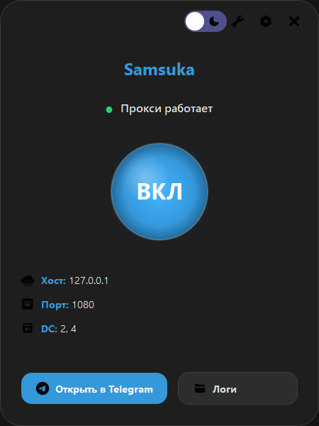
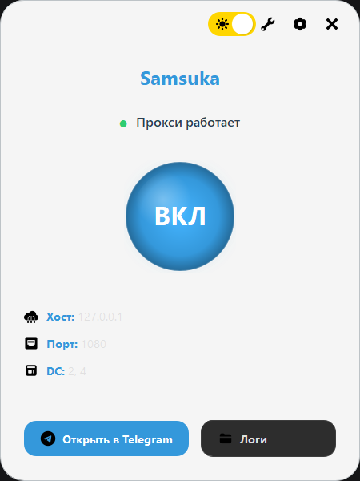
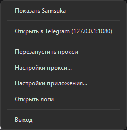
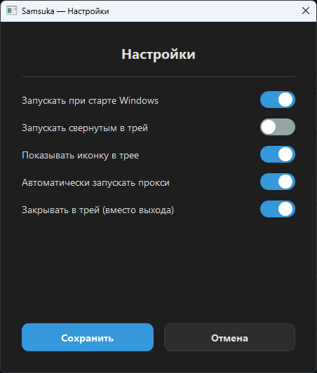

127.0.0.1:1080 (порт настраивается)
Стильный темный интерфейс для комфортной работы ночью

Классическая светлая тема для дневного использования

Удобное управление из системного трея

Гибкая настройка всех параметров прокси
Стильный дизайн — современный интерфейс с закругленными углами и плавными анимациями
Кастомное меню в трее — удобное управление из системного трея
Большая кнопка питания — визуально понятное включение/выключение прокси
Поддержка иконок — все элементы интерфейса используют векторные иконки
Переключение темы одним кликом
Запуск вместе с Windows
Подробные логи для отладки
Хост, порт и DC-маппинги
Windows Defender может ошибочно распознать программу как вирус. Это связано с особенностями работы с сетью (перехват трафика) и упаковкой бинарника.
Репозиторий оригинальной программы: https://github.com/Flowseal/tg-ws-proxy/
Я не выдаю свою модификацию за отдельное приложение. Вы можете модифицировать мой код как вам угодно.